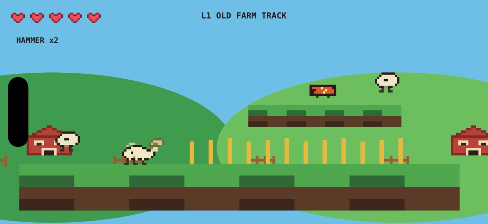
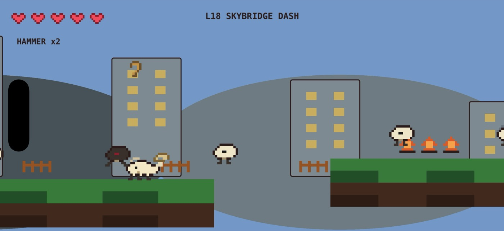
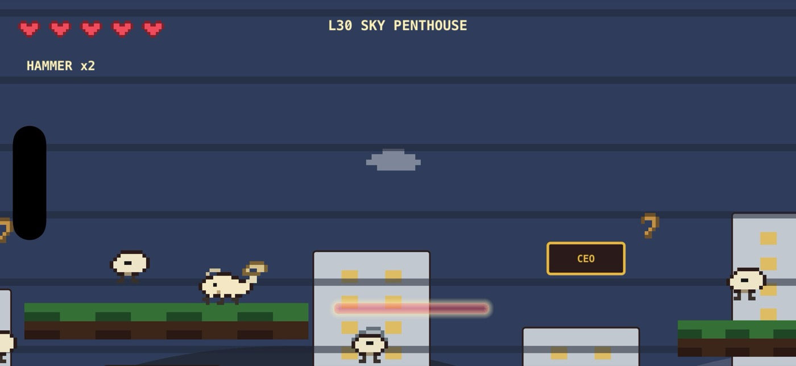

Farm to Metropolis
Retro Goat Rampage starts in a rural goat settlement and keeps escalating: small towns, heavier streets, vertical city climbs, and a final tower packed with traps, enemies, and boss fights.



Built for Quick Runs
30 levels
Countryside paths, rooftops, neon streets, and tower floors with a boss waiting at the end of each stage.
Arcade combat
Ram sheep with your horns, use power-ups, and swing over danger with the goat's tongue.
Fast touch controls
Simple iPhone controls designed for jumping, charging, and reacting without slowing the pace down.